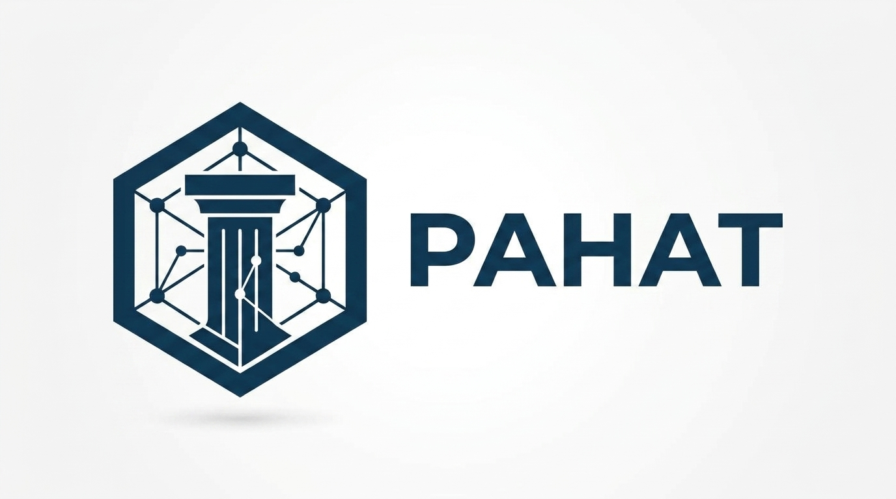

Documentation Guide v2.3.1🚀 PAHAT Programming Language
PAHAT (Pemrograman Analitis Berbasis Heuristik dan Arsitektur Terpadu) adalah bahasa pemrograman expressive & lightweight dengan sintaks intuitif berbasis bahasa Indonesia.
Prasyarat Sistem (Pre-requisites)
Sebelum menjalankan interpreter PAHAT-Lang, pastikan sistem Anda memenuhi kebutuhan berikut:
- Sistem Operasi: Windows 10/11 (64-bit) atau Linux (Ubuntu 20.04+/Debian).
- Terminal/CLI: Akses ke Command Prompt, PowerShell, atau Terminal Linux untuk mengeksekusi biner interpreter.
👨💻 Tentang PAHAT
PAHAT dibuat oleh Syahdan Masyhuri sebagai bahasa pemrograman yang berfokus pada kesederhanaan sintaks, keterbacaan, dan pengalaman pemrograman yang dekat dengan bahasa Indonesia.
PAHAT berusaha menghadirkan pengalaman pemrograman yang ringan, ekspresif, dan mudah dipahami, tanpa menghilangkan konsep-konsep fundamental seperti variabel, operator, kontrol alur, fungsi, struktur data, JSON, standard library, dan modul.
"PAHAT — sederhana untuk dibaca, ringan untuk digunakan." 🚀
Dibuat dengan ❤️ oleh Syahdan Masyhuri.
📌 Metadata
| Properti | Nilai |
|---|---|
| Nama | PAHAT Programming Language |
| Kepanjangan | Pemrograman Analitis Berbasis Heuristik dan Arsitektur Terpadu |
| Pembuat | Syahdan Masyhuri |
| Versi | 2.3.1 |
| Status | Development |
| Ekstensi File | .pahat |
| Bahasa Sintaks | Bahasa Indonesia |
| Paradigma | Prosedural, Imperatif, Fungsional |
| Lisensi | MIT |
▶️ Menjalankan Interpreter
Menggunakan REPL pada terminal/command line dengan mengetikkan pahat.
C:\path\users>pahat
____ _ _ _
| _ \ __ _ | |__ __ _| |_| |
| |_) / _` || '_ \ / _` | __| |
| __/ (_| || | | | (_| | |_| |
|_| \__,_||_| |_|\__,_|\__|_|
PAHAT Programming Language
Interactive Interpreter (REPL)
Created by Syahdan Masyhuri
pahat>Menggunakan file dengan extensi .pahat.
C:\path\users>pahat example.pahat🔤 Variabel
PAHAT menggunakan sintaks sederhana untuk membuat variabel dengan operator penugasan =. Penulisan baris dieksekusi dengan diakhiri tanda titik koma ;.
nama = "Syahdan";
umur = 20;
tinggi = 170.5;
aktif = true;PAHAT menggunakan penetapan tipe data secara dinamis berdasarkan nilai yang diberikan. Variabel dapat berubah tipe selama program berjalan.
angka = 10;
angka = "sepuluh";PAHAT mendukung lexical / block scope. Setiap blok kode { ... }, blok kondisi jika / lainnya, blok perulangan selama / ulang, dan blok percabangan pilih / kasus memiliki frame variabel tersendiri (block frame) yang terisolasi.
Detail Mekanisme Lexical Scope:
- Pencarian Variabel: Pencarian variabel menelusuri rantai frame dari block frame saat ini hingga ke global frame.
- Mutasi vs Deklarasi: Jika variabel sudah dideklarasikan di scope luar, perubahan nilai akan memutasi variabel tersebut. Jika belum ada, variabel baru akan dibuat di dalam block frame terdalam.
- Pembersihan Otomatis: Variabel yang dibuat di dalam blok akan dibebaskan secara otomatis saat keluar dari blok dan tidak dapat diakses dari luar scope.
- Propagasi Sinyal Aliran: Kata kunci
kembalikan,hentikan, danlanjutkanmerambat secara aman keluar dari rantai blok scope.
x = 10;
{
y = 20;
x = 15; // Mengubah x di outer scope
cetak(y); // 20
}
cetak(x); // 15
// cetak(y); // Error: variabel 'y' tidak ditemukan (terisolasi di dalam blok)
jika (true) {
temp = 100;
}
// cetak(temp); // Error: variabel 'temp' tidak ditemukan
ulang (i = 0; i < 3; i++) {
cetak(i);
}
// cetak(i); // Error: variabel 'i' tidak ditemukan🧩 Tipe Data
INTEGER
Bilangan bulat.
umur = 20;
jumlah = 100;FLOAT
Bilangan desimal yang dipisahkan tanda titik ..
tinggi = 170.5;
nilai = 98.75;STRING
Teks menggunakan tanda kutip ganda ("...") atau kutip tunggal ('...'). PAHAT mendukung escape sequence seperti \n, \t, \r, \", dan \'.
nama = "Syahdan";
pesan = 'Halo Dunia!';BOOLEAN
Nilai logika menggunakan true dan false.
NULL
PAHAT menggunakan nol sebagai representasi nilai kosong.
data = nol;🧮 Operator
Operator Aritmatika
| Operator | Fungsi | Contoh |
|---|---|---|
+ | Penjumlahan | a + b |
- | Pengurangan / Unary Minus | a - b, -a |
* | Perkalian | a * b |
/ | Pembagian | a / b |
% | Modulo (Sisa Bagi) | a % b |
** | Pangkat (Exponentiation) | a ** b |
Operator Perbandingan
| Operator | Fungsi |
|---|---|
== | Sama dengan |
!= | Tidak sama dengan |
< | Lebih kecil |
> | Lebih besar |
<= | Lebih kecil atau sama |
>= | Lebih besar atau sama |
Operator Logika
| Operator | Fungsi |
|---|---|
&& | AND |
|| | OR |
^ | XOR |
! | NOT (Negasi) |
🖨️ Input dan Output
Untuk menampilkan nilai ke layar digunakan fungsi cetak().
cetak("Halo Dunia!");
cetak(10);
cetak(10 + 20);PAHAT menyediakan fungsi scan() untuk menerima input dari pengguna melalui terminal. Nilai yang dibaca oleh scan() berupa string
nama = scan("Nama: ");
cetak(nama);Untuk mengubah input menjadi tipe numerik, gunakan fungsi ke_int() untuk integer dan ke_float() untuk float.
umur = ke_int(scan("Umur: "));
cetak(umur);
tinggi = ke_float(scan("Tinggi: "));
cetak(tinggi);📝 Komentar (Comments)
Komentar digunakan untuk memberi catatan pada kode tanpa mempengaruhi eksekusi program. PAHAT mendukung dua jenis komentar:
1. Komentar Satu Baris (Single-line)
Gunakan simbol // atau # untuk menulis komentar satu baris.
// Ini adalah komentar satu baris
nama = "Syahdan"; // Ini juga komentar satu baris2. Komentar Multi Baris (Multi-line)
Gunakan blok /* ... */ untuk menulis komentar yang mencakup beberapa baris sekaligus.
/*
Dokumentasi Fungsi Utama
PAHAT Programming Language v2.3.1
Dibuat oleh: Adan
*/
fungsi utama() {
tulis("Halo, Dunia!");
}🔀 Percabangan
PAHAT menggunakan kata kunci jika untuk mengevaluasi kondisi dan lainnya untuk alternatif kondisi.
nilai = 85;
jika (nilai >= 90) {
cetak("A");
} lainnya jika (nilai >= 80) {
cetak("B");
} lainnya {
cetak("C");
}🔁 Perulangan
selama (While Loop)
angka = 1;
selama (angka <= 5) {
cetak(angka);
angka++;
}ulang (For Loop)
ulang (i = 0; i <= 4; i++) {
cetak("Halo PAHAT!");
}Hentikan Iterasi — hentikan
Gunakan hentikan untuk menghentikan perulangan secara paksa.
🔀 Pilihan Kondisi (Switch Case)
Menggunakan kata kunci pilih, kasus, dan bawaan. Menggunakan perilaku **no fall-through**.
pilihan = 2;
pilih (pilihan) {
kasus 1: {
cetak("Pilihan pertama");
}
kasus 2: {
cetak("Pilihan kedua");
}
bawaan: {
cetak("Pilihan tidak ditemukan");
}
}📦 Array
Array didefinisikan menggunakan kurung siku [...]. Elemen diakses berdasarkan indeks berbasis 0.
angka = [10, 20, 30, 40, 50];
cetak(angka[0]); // 10
cetak(angka[2]); // 30🗂️ Object
PAHAT mendukung **object literal** untuk menyimpan pasangan key-value.
pengguna = {
nama: "Syahdan",
umur: 20,
aktif: true
};
cetak(pengguna["nama"]);
cetak(pengguna.umur);🧾 JSON
PAHAT menyediakan fungsi bawaan baca_json() dan tulis_json() sebagai core builtin (tanpa perlu di-import).
⚙️ Fungsi
Fungsi dideklarasikan menggunakan kata kunci fungsi dan kembalikan.
fungsi tambah(a, b) {
kembalikan a + b;
}
hasil = tambah(10, 20);
cetak(hasil); // 30Fungsi tanpa nama dapat dibuat dan disimpan ke variabel, dijadikan argumen fungsi (higher-order function), disimpan dalam object/array, atau dipanggil secara langsung (IIFE).
// 1. Disimpan ke variabel
kali = fungsi(a, b) {
kembalikan a * b;
};
cetak(kali(5, 4)); // 20
// 2. Dipassing sebagai argumen (Higher-Order Function)
fungsi jalankan(fn, nilai) {
kembalikan fn(nilai);
}
hasil = jalankan(fungsi(x) { kembalikan x + 10; }, 5);
cetak(hasil); // 15
// 3. Dipanggil langsung (IIFE)
hasil_iife = (fungsi(x) { kembalikan x * 2; })(50);
cetak(hasil_iife); // 100
// 4. Metode pada Object
pengguna = {
"sapa": fungsi(nama) {
kembalikan "Halo " + nama;
}
};
cetak(pengguna.sapa("Budi")); // Halo Budi📦 Modul
Gunakan kata kunci impor diikuti string path module (ekstensi .pahat tidak ditulis).
impor "modul/matematika";
hasil = matematika.tambah(10, 20);
cetak(hasil);📚 Standard Library
🧠 Core Builtin
Dapat digunakan langsung tanpa impor:
panjang(data)— Menghitung panjang string/array.tipe(data)— Mendapatkan tipe data nilai.- Fungsi Garbage Collector:
gc_collect(),gc_object_count(), dll.
➗ Module math
impor "math";
cetak(math.tambah(10, 20));
cetak(math.pangkat(10, 2));🔤 Module string
impor "string";
teks = "Halo Pahat";
cetak(string.besar(teks));
cetak(string.kecil(teks));📁 Module file
Menyediakan operasi file: file.ada(), file.baca(), file.tulis(), file.tambah(), file.hapus(), dan file.ukuran().
💻 Module os
Menyediakan operasi sistem: os.cwd(), os.getenv(), os.platform(), os.env(), dan os.exit().
⏱️ Module time
Menyediakan operasi waktu: time.sekarang(), time.timestamp(), dan time.tidur().
🧵 Module thread
impor "thread";
kunci = thread.kunci_baru();
fungsi pekerja(pesan) {
thread.kunci(kunci);
cetak("Mulai kerja: " + pesan);
thread.buka(kunci);
thread.tidur(500);
kembalikan "Selesai " + pesan;
}
t1 = thread.buat("pekerja", "Tugas A");
t2 = thread.buat("pekerja", "Tugas B");
hasil1 = thread.gabung(t1);
hasil2 = thread.gabung(t2);
cetak(hasil1);
cetak(hasil2);🌐 Module http
impor "http";
// ==========================================
// 1. HANDLER HALAMAN UTAMA / BERANDA
// ==========================================
fungsi tangani_beranda(req) {
html = "" +
"PAHAT HTTP Server" +
"" +
"# Selamat Datang di PAHAT Web Server!
" +
"
Server ini mendukung routing dinamis, method matching, dan kustomisasi header.
" +
"" +
"";
kembalikan http.respon(200, html);
}
// ==========================================
// 2. HANDLER LIST PENGGUNA (GET)
// ==========================================
fungsi tangani_daftar_pengguna(req) {
daftar = [
{"id": "1", "nama": "Budi", "peran": "Developer"},
{"id": "2", "nama": "Siti", "peran": "Designer"}
];
kembalikan http.respon_json(200, daftar);
}
// ==========================================
// 3. HANDLER DENGAN PARAMETER URL (GET /api/pengguna/{id})
// ==========================================
fungsi tangani_detail_pengguna(req) {
// Mengambil parameter 'id' dari URL dinamis
user_id = req["params"]["id"];
res_data = {
"status": "berhasil",
"user_id": user_id,
"detail": {
"nama": "Pengguna " + user_id,
"status_akun": "aktif"
}
};
kembalikan http.respon_json(200, res_data);
}
// ==========================================
// 4. HANDLER TAMBAH PENGGUNA (POST)
// ==========================================
fungsi tangani_tambah_pengguna(req) {
res_data = {
"pesan": "Pengguna baru berhasil ditambahkan!",
"payload": req["body"]
};
kembalikan http.respon_json(201, res_data);
}
// ==========================================
// 5. HANDLER TERPROTEKSI & CUSTOM HEADERS
// ==========================================
fungsi tangani_area_rahasia(req) {
// Membaca header Authorization dari Request Client
auth_header = req["headers"]["authorization"];
// Verifikasi Token
jika (auth_header != "Bearer rahasia123") {
header_error = {
"WWW-Authenticate": "Bearer realm='Akses Terbatas'"
};
// Status 401 Unauthorized + Custom Header Response
kembalikan http.respon(401, "Akses Ditolak! Token Salah atau Tidak Ditemukan.", "text/html", header_error);
}
// Custom Response Headers (CORS & Cookie) jika autentikasi berhasil
custom_headers = {
"Access-Control-Allow-Origin": "*",
"X-Powered-By": "PAHAT-Engine",
"Set-Cookie": "session_id=98765; Path=/"
};
res_data = {
"status": "sukses",
"pesan": "Selamat! Anda berhasil mengakses data rahasia."
};
kembalikan http.respon_json(200, res_data, custom_headers);
}
// ==========================================
// REGISTRASI RUTE (ROUTING TABLE)
// Sintaks: http.tangani("METHOD", "PATH", "NAMA_FUNGSI")
// ==========================================
http.tangani("GET", "/", "tangani_beranda");
http.tangani("GET", "/api/pengguna", "tangani_daftar_pengguna");
http.tangani("GET", "/api/pengguna/{id}", "tangani_detail_pengguna");
http.tangani("POST", "/api/pengguna", "tangani_tambah_pengguna");
http.tangani("GET", "/api/rahasia", "tangani_area_rahasia");
// ==========================================
// JALANKAN HTTP SERVER
// Sintaks: http.mulai("HOST", PORT)
// ==========================================
cetak("Memulai PAHAT HTTP Server di http://0.0.0.0:8080...");
http.mulai("0.0.0.0", 8080);🧪 Contoh Program Lengkap
impor "modul/matematika";
impor "math";
impor "string";
impor "file";
impor "os";
impor "time";
pengguna = {
nama: "Syahdan",
umur: 20,
aktif: true,
nilai: [80, 90, 95]
};
cetak("=== DATA PENGGUNA ===");
cetak(pengguna.nama);
cetak(string.besar(pengguna.nama));
jika (pengguna.umur >= 18 && pengguna.aktif) {
cetak("Pengguna aktif dan sudah dewasa");
} lainnya {
cetak("Pengguna tidak memenuhi syarat");
}
cetak("=== MATEMATIKA ===");
hasil = math.pangkat(10, 2);
cetak(hasil);
cetak("=== FILE & OS ===");
cetak(os.platform());
file.tulis("test.txt", "Hello PAHAT!");
cetak("=== JSON ===");
json_data = tulis_json(pengguna);
cetak(json_data);📜 Lisensi
PAHAT menggunakan lisensi MIT.